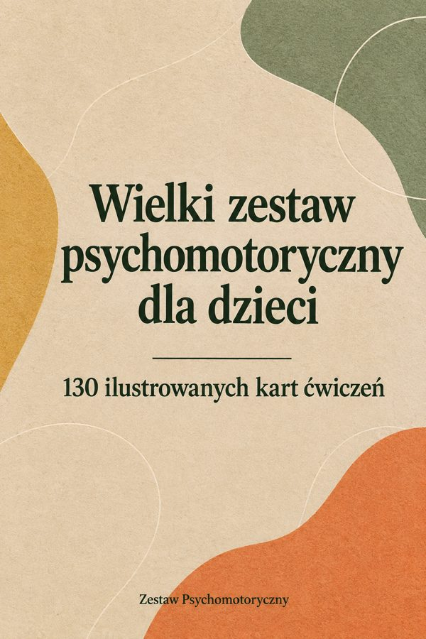

Wielki zestaw psychomotoryczny dla dzieci
130 ilustrowanych kart ćwiczeń psychomotorycznych w 9 działach, z wariantami i punktami obserwacji.
Otwórz →Twoje bonusy
Karty do wycinania
Części ciała, prawo i lewo, zwierzęta, kolory i polecenia. Drukujesz raz, używasz w dziesiątkach ćwiczeń.
Otwórz →Bonus 2Plan na 4 tygodnie
Gotowy plan, sesja po sesji: jakie ćwiczenie zrobić i w jakiej kolejności.
Otwórz →Bonus 3Arkusz obserwacji
Jedna strona na dziecko, żeby zapisywać postępy sesja po sesji. Do dołączenia do raportu.
Otwórz →Bonus 4Pomoce za zero złotych
Jak zrobić pachołki, tunele, podesty i karty z tego, co masz już w domu albo w gabinecie.
Otwórz →Bonus 512 ćwiczeń wyciszających
Na zakończenie sesji, żeby dziecko wychodziło spokojne.
Otwórz →Bonus 6Karty do domu
Proste ćwiczenia z instrukcjami dla rodziców, żeby praca trwała między sesjami.
Otwórz →Bonus 7Dostosowania specjalne
Jak dostosować ćwiczenia przy autyzmie, ADHD, opóźnieniu rozwoju ruchowego i u dzieci, które unikają dotyku.
Otwórz →Bonus 812 błyskawicznych sesji po 10 minut
Na dni, kiedy sesja się skraca, dziecko się spóźnia albo masz zastępstwo.
Otwórz →Od czego zacząć
- Otwórz «Spis obrazkowy» na stronie 3 zestawu i wybierz obszar, który chcesz dziś ćwiczyć.
- Wydrukuj kartę albo otwórz ją na tablecie. Pomoce znajdziesz w ramce «Pomoce».
- Wydrukuj raz «Karty do wycinania»: przydadzą się w dziesiątkach ćwiczeń.
- Po sesji uzupełnij «Arkusz obserwacji»: postępy masz czarno na białym.
Do użytku osobistego. Zakaz odsprzedaży i rozpowszechniania.